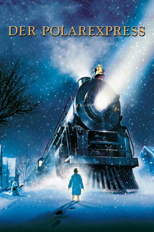

Alternativ: The Polar Express
Auszeichnungen: für 3 Oscars nominiert
 
 IMDB-Wertung: 6.6 / 10
IMDB-Wertung: 6.6 / 10  Metascore:
Metascore: 
An einem verschneiten Weihnachtsabend liegt ein kleiner Junge aufgeregt und hellwach in seinem Bett. Er bewegt sich nicht, wagt kaum zu atmen. Er hat Angst, daß er zum letzten Mal jenes Geräusch verpassen könnte, das ihm schon oft entgangen ist – das Klingeln der Glöckchen am Schlitten des Weihnachtsmanns. Es ist fünf Minuten vor Mitternacht als der Junge von einem donnernden Brausen aufgeschreckt. Er reibt die beschlagenen Scheiben an seinem Fenster blank und traut seinen Augen nicht: Ein glänzender schwarzer Eisenbahnzug hält vor seinem Haus, der Dampf der gewaltigen Lokomotive zischt durch die sanft fallenden Schneeflocken in den Nachthimmel. Der Junge rennt in Pyjama und Pantoffeln nach draußen, wo ihn der Zugschaffner begrüßt, der offensichtlich auf ihn gewartet hat. “Also, kommst du mit?” fragt der Schaffner. „Wohin?” “Na, zum Nordpol natürlich. Dies ist der Polarexpress!”
Jahr: 2004
Dauer: 100 Minuten
FSK: 6
Land: USA Studio: Warner Bros.Tonspuren: DD5.1 - ,
Untertitel: Deutsch,
Auflösung: 1080p (1920x800) Größe: 5171 MB
Genre: Animation/Trick, Abenteuer, Familie, Fantasy, Musical, Weihnachten
Regisseur:  Robert Zemeckis
Robert Zemeckis
Drehbuch: Gerard Barrett
Soundtrack:
Darsteller:
Datei: X:\Kinder Filme (N-Z)\Polarexpress, Der (2004, FSK6, 1920x800) 3D.mkv seit 23.11.2016
Festplatte: Kinder-Filme+Trick
 Es gibt insgesamt 87 Filme in der Gruppe 'Kinder Filme (N-Z)'
Es gibt insgesamt 87 Filme in der Gruppe 'Kinder Filme (N-Z)'